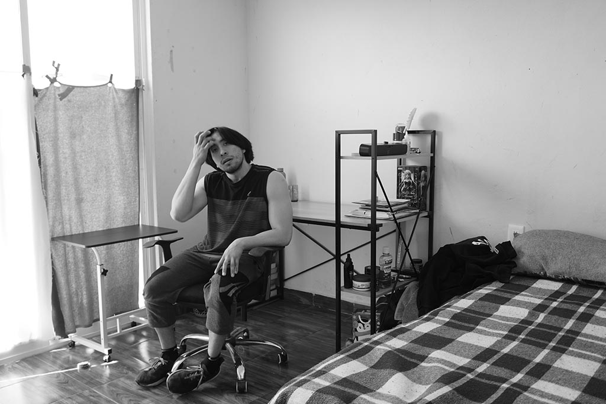

Oscar
Ciudad de México, Álvaro Obregón
Licenciatura en Ingeniería en Sistemas Mecatrónicos (egresado).
25 años.
6 años viviendo en Lerma.
$1600 de arrendamiento.
galería
Testimonio
"Creo que... este se convirtió en mi hogar, cuando llegó luna, mi gata, cuando la rescaté...como que si sentí esa compañía, esa calidez ¿no?...yo dije, no pues este lugar se volvió mi hogar."